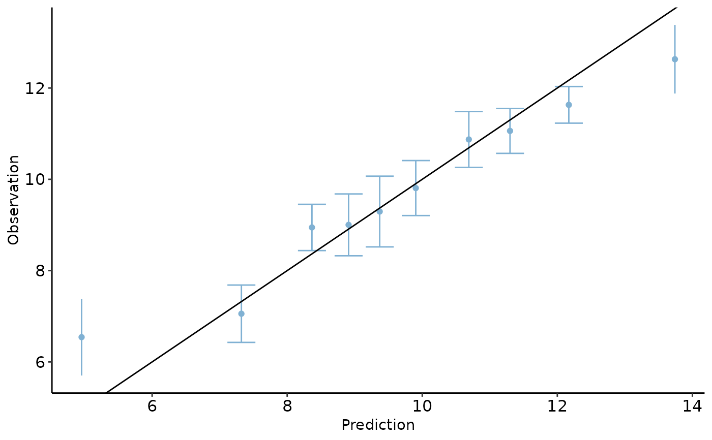

R/calibPlot.R
calibration_plot.RdTitle Create calibration plot based on observed and predicted outcomes.
calibration_plot( data, obs, follow_up = NULL, pred_1, pred_2 = NULL, nTiles = 10, legendPosition = "right", title = NULL, x_lim = NULL, y_lim = NULL, model_label_1 = NULL, model_label_2 = NULL, xlab = "Prediction", ylab = "Observation", points_col_list = NULL, data_summary = FALSE )
| data | Data include observed and predicted outcomes. |
|---|---|
| obs | Name of observed outcome in the input data. |
| follow_up | Name of follow-up time (if applicable) in the input data. |
| pred_1 | Name of first predicted outcome in the input data. |
| pred_2 | Name of second (if applicable) predicted outcome in the input data. |
| nTiles | Number of tiles (e.g., 10 for deciles) in the calibration plot. |
| legendPosition | Legend position on the calibration plot. |
| title | Title on the calibration plot. |
| x_lim | Limits of x-axis on the calibration plot. |
| y_lim | Limits of y-axis on the calibration plot. |
| model_label_1 | Label of the first prediction set. |
| model_label_2 | Label of the first prediction set. |
| xlab | Label of x-axis on the calibration plot. |
| ylab | Label of y-axis on the calibration plot. |
| points_col_list | Points' color on the calibration plot. |
| data_summary | Logical indicates whether a summary of the predicted and observed outcomes. needs to be included in the output. |
Returns calibration plot (a ggplot object) and a dataset including summary statistics of the predicted and observed outcomes (if data_summary set to be TRUE).
#> #>#> #> #>#> #> #>x <- rnorm(100, 10, 2) y <- x + rnorm(100,0, 1) data <- tibble(x,y) calibration_plot(data, obs = "x", pred_1 = "y")#> $calibration_plot#>